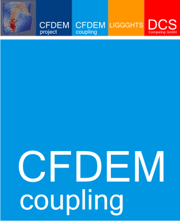

CFDEMcoupling Documentation¶
Academic version 24.01

Note
This is an academic adaptation of the CFDEMcoupling software package, released by the Department of Particulate Flow Modelling at Johannes Kepler University Linz, Austria. This offering is not approved or endorsed by DCS Computing GmbH, the producer of the LIGGGHTS® and CFDEM®coupling software and owner of the LIGGGHTS and CFDEM® trade marks.
The CFDEMcoupling documentation is organized into the following sections. If you find any errors or omissions in this manual or have suggestions for useful information to add, please send an email to the developers so the CFDEMcoupling documentation can be improved.
User Documentation
- 1. About CFDEMcoupling
- 2. Installation
- 3. Tutorials
- 4. Dictionaries
- 5. Solvers
- 6. Models
- 6.1. I/O models
- 6.2. Averaging models
- 6.3. Chemistry models
- 6.4. Clock models
- 6.5. Data exchange models
- 6.6. Diffusion coefficient models
- 6.7. Energy models
- 6.8. Force models
- 6.9. LIGGGHTS command models
- 6.10. Locate models
- 6.11. Mass transfer models
- 6.12. Mesh motion models
- 6.13. Momentum coupling models
- 6.14. Other force models
- 6.15. Probe models
- 6.16. Region models
- 6.17. Smoothing models
- 6.18. Thermal conductivity models
- 6.19. Void fraction models